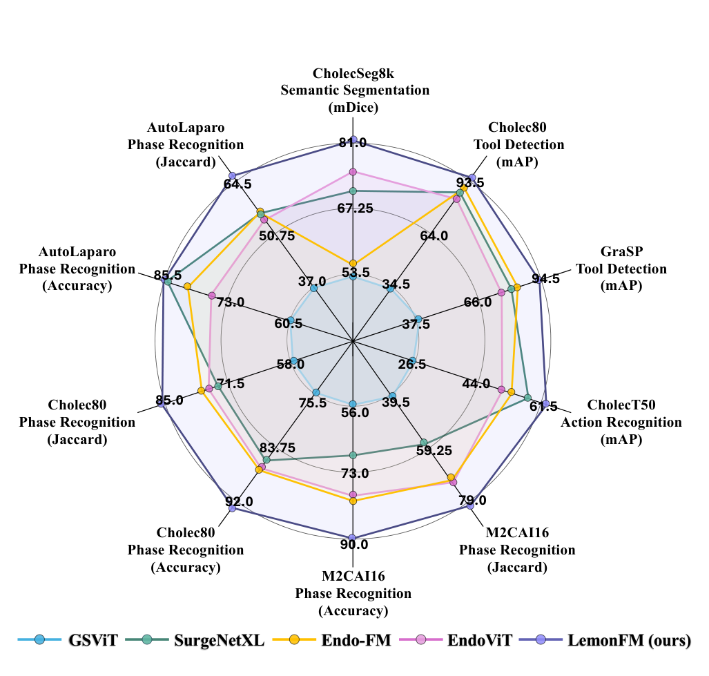
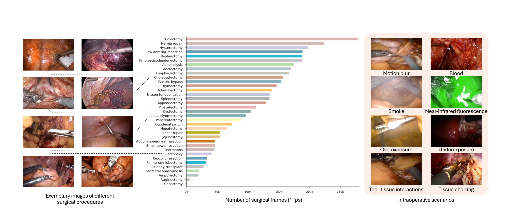
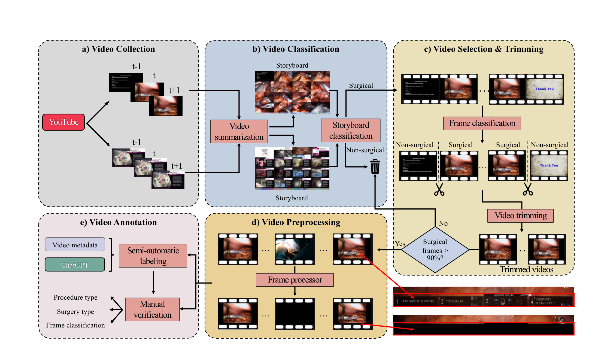
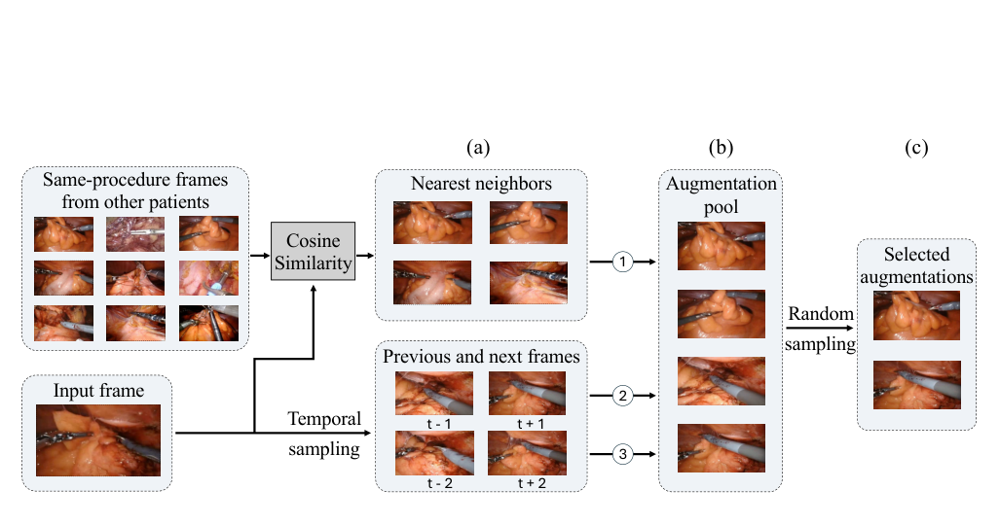
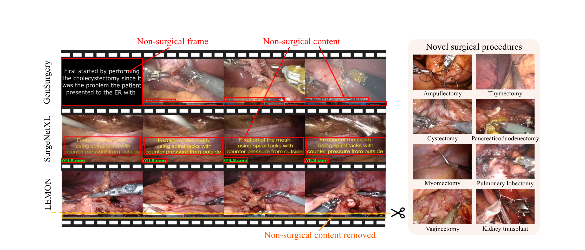

LEMON 深读：私有手术数据喂不饱基础模型，凭什么"爬 YouTube + 一条狠 curation + 增强自蒸馏"就能在 6 个基准上压过同行？
导读。手术计算机视觉长期被一句话卡死：公开数据太小——经典基准常常只有几十段视频、不到 30 小时画面，模型一换医院、一换术式就垮。绕开"采集真实手术 + 标注 + 过隐私合规"这条又贵又慢的路，LEMON 的赌注是互联网本身就是一座没被认真挖过的手术数据矿：从 YouTube 爬下约 1.8 万段原始视频，用一条多级 curation 流水线把"非手术内容"层层削掉，凑出 4194 段、938 小时、8500 万帧、35 种术式的 LEMON——目前最大的开放手术数据集。但"数据大"只是入场券，真正的机制问题是：当训练帧来自不同病人、相机一直在动、同一术式长得千差万别，自监督该学的"不变性"从哪来？LemonFM 的回答是在 DINO 自蒸馏上加一路增强蒸馏——把"同术式其他病人的最近邻帧 + 时间相邻帧"也作为蒸馏视图喂进去，逼模型对"跨病人外观差异"和"相邻帧的微小运动"都给出一致表示。结果：冻结线性探测和全微调两种协议下，LemonFM 在 4 个任务、6 个数据集上稳定压过现有手术基础模型，相位识别最高 +9.5pp Jaccard、分割 +10.3pp mDice。
visurg-ai/LEMON）。{kind=link}

1. 核心问题：手术数据"既小又难采"，那互联网这座矿挖不挖得动？
论文开篇把痛点说得很直白：传统开放手术数据集"常常少于 100 段视频、不到 30 小时"，规模一小，模型泛化就差。而手术领域偏偏最难自己采数据——医疗数据复杂、病人隐私合规严苛，导致很多手术视觉数据集不到 1 万张图。这类数据集做某个特定任务的验证够用，但撑不起一个能跨术式、跨场景泛化的基础模型。
自监督学习给了一条绕路：用大规模无标注数据预训练，减少对标注的依赖。但"无标注"不等于"无数据"——你仍然得有海量手术画面。于是论文把问题收敛成两个可验证的子命题：(1) 公开的在线手术视频，够不够凑出一个全面的数据集？(2) 在这种数据上自监督训练，能不能在下游任务上做到 SOTA？
问：YouTube 上手术视频确实多，但"多"和"能用"是两回事——直接爬下来训练，会踩什么坑？
引导：盯住"在线视频"和"无菌的手术帧"之间的差距。一段 YouTube 手术视频里，混着片头片尾幻灯片、术者出镜讲解、会议演讲、患者证言、UI 角标、设备 logo、体外镜头……这些非手术内容如果不清，会被判别式模型当成"特征"学走。
答：论文明确点名了前人路线的软肋——GenSurgery、SurgeNetXL 虽然靠汇编公开视频扩了覆盖面，但缺一道把非手术内容剔除的 curation，可能引入"伪特征"（spurious features）混淆判别模型（图 3）；而 SVL、SAGES CVS 这类私有数据集访问受限，难以推广。所以 LEMON 的第一主张不是"我们爬得多"，而是"我们爬完之后清得狠"——curation 流水线本身就是贡献，不是预处理边角料。第 8 节的消融会证明：同一批原始视频，过不过 curation，下游分别差 +4.5pp F1（相位）/ +1.3pp mDice（分割）。
Takeaway：真问题不是"互联网有没有手术数据"，而是"怎么把能用的那部分从噪声里捞干净"——这道 curation 是把"在线视频"变成"训练语料"的闸门。
2. 贡献拆解：作者明确提出了什么？
作者明确提出的三条贡献（论文 §6 结论原文）：
- 一条新的数据 curation 流水线——专门针对在线手术视频，把非手术视频、手术视频里的非手术帧、帧内的非手术区域逐级剔除并人工质检。
- 由此产出的大规模多样数据集 LEMON——4194 视频、938 小时、85M 帧、35 种术式，含机器人辅助与传统非机器人腹腔镜；作者称其为目前最大的开放手术数据集（无论按总帧数、视频数还是术式广度）。
- 专为手术应用的基础模型 LemonFM——用提出的增强知识蒸馏方法在 LEMON 上自监督预训练，在四类下游任务上压过现有手术基础模型与任务专用架构。
论文另外还顺手立了两个新下游任务 + 排行榜（论文 §3.2）：基于视频标注的多标签术式分类（35 类）与二分类手术类型（机器人/非机器人），并提出视频分类头 LemonFM-Vid。
读数提醒：这篇的"评测姿态"——双协议、独立医院、官方划分
LemonFM 同时报线性探测（冻结 backbone 只训一个线性头，衡量"表示本身好不好"）和全微调（backbone+head 一起训，衡量"调到上限有多高"）。下游数据集全部来自与预训练独立的医院，沿用各自官方划分与指标；没有官方结果的，用统一协议自测以"隔离预训练权重的影响"。这意味着它的领先不是"在自己地盘上调参"，而是跨域迁移的领先。
读者能进一步推断的是：这篇真正推进的单一变量，是"用纯公开、可自由分发的在线视频，配一道严格 curation，就能逼近甚至超过依赖私有数据的方案"。它没发明新损失家族（蒸馏目标仍是 DINO 式交叉熵），核心创新是蒸馏视图的来源——把"同术式其他病人 + 时间邻居"也当成正视图，这一步才是 LemonFM 区别于 vanilla DINO 的地方（消融里分割 +3.2pp mDice）。
3. 数据：从 1.8 万段原始视频，削到 4194 段"干净手术"
LEMON 的体量在表 1 里一目了然：35 种术式、4194 段视频、938 小时、8500 万帧（1fps 下 340 万帧），在视频数、时长、帧数、术式广度上都超过 GenSurgery（28 术式 / 680h）与 SurgeNetXL（23 术式 / 576h）。
| 数据集 | 术式数 | 视频数 | 时长(h) | 总帧数 | 帧数(1fps) |
|---|---|---|---|---|---|
| M2CAI16 | 1 | 41 | 26 | 2.4M | 95K |
| Cholec80 | 1 | 80 | 51 | 4.6M | 183K |
| CholecT50 | 1 | 50 | 28 | 2.5M | 101K |
| AutoLaparo | 1 | 21 | 23 | 2.1M | 83K |
| GraSP | 1 | 13 | 33 | 3.5M | 117K |
| GenSurgery | 28 | 3182 | 680 | 70M | 2.4M |
| SurgeNetXL | 23 | 3253 | 576 | 52M | 2.1M |
| LEMON (ours) | 35 | 4194 | 938 | 85M | 3.4M |
读这张表抓两点。其一，经典基准都是"单术式"（术式数=1，几乎全是胆囊切除 Cholec 系列）——这正是"小而窄"的写照；LEMON 把术式数拉到 35，覆盖面是质变。其二，规模从"1.8 万原始视频"漏斗式收到"4194"：附录 B 给了漏斗的每一档——初始约 1.8 万段 → 视频分类过滤后剩 6617 段 → trim/预处理又削掉 66 小时非手术画面 → 最终 4194 段 / 938 小时。"削掉一多半"恰恰说明原始 YouTube 数据有多脏，也说明 curation 不是摆设。
{kind=link}

3.1 两个新任务与人工成本：35 类术式 + 机器人/非机器人，标注一致性 Kappa 0.97
每段视频被标两类标签：多标签术式分类（35 选 N）与二分类手术类型（机器人 / 非机器人）。机器人判定靠标题关键词（da Vinci、Hugo、Versius、Senhance 等，大小写不敏感），不命中的人工核对。为验证标注可靠性，两位研究者独立标了 >10%（500 段）分层随机子集，术式一致性 Cohen's Kappa = 0.97、手术类型 >0.99。人工总工时（附录 B.6）：标 4K storyboard 3h + 8K 帧 3h + 2719 帧的非手术框 10h + 复核视频去伪影 72h + 标注核验 18h——其中"复核去体外镜头"这一项最重，正说明 curation 的人工兜底不可省。
4. Curation 流水线：五级漏斗，把"非手术"从视频级、帧级、像素级逐层削掉
图 2 是 LEMON 的数据骨架。它的设计逻辑是"非手术内容藏在三个粒度上，就分三个粒度清"：整段视频可能是演讲（视频级）、手术视频里夹着片头幻灯片（帧级）、手术帧里还有 UI 角标/logo（区域级）。流水线对每一级各设一道分类/检测器。
{kind=link}

为什么是"storyboard 先粗筛、帧分类器再细筛"这种两段式？
这呼应 §1 的"能用 vs 多"。直接逐帧分类 1.8 万段长视频，算力和标注都吃不消。storyboard 把一整段视频压成一张 16 帧拼图——标注者瞄一眼就知道是不是手术，分类器也只需判一张图，于是视频级的粗筛极廉价（附录 Table 8：storyboard 分类 5 折平均 F1=94.75%）。粗筛之后只剩 6617 段，再上更精细的逐帧分类器做裁剪（附录 Table 9：帧分类 F1=95.64%）。把"贵的精细操作"留到"便宜的粗筛缩小集合之后"——这是漏斗设计的算力账。
为把精度顶到可发布水平，curation 的三个组件（storyboard 分类、帧分类、非手术区域检测）都用 5 折交叉验证的 5 模型集成，推理时各设 70% 置信阈值，分类用多数投票、检测用 NMS。论文报告：这套严格策略让流水线在视频级达 100% 精度、帧级 >99.9% 精度（附录 B.5）。区域级的 YOLOv8 检测 5 折平均 mAP50=79.29%（附录 Table 10），抹掉的非手术框坐标还以 JSON 形式公开，方便复现者定位原始 UI 元素位置。
5. 方法：在 DINO 自蒸馏上加一路"增强蒸馏"，把跨病人/跨帧不变性显式训进去
5.1 先把 DINO 自蒸馏讲清楚：teacher 出软标签，student 去对齐
LemonFM 的骨架是 DINO 式自监督知识蒸馏。teacher 和 student 是同构网络（论文选 ConvNeXt-L），student 参数 $\theta_s$ 用梯度下降更新，teacher 参数 $\theta_t$ 是 student 的指数滑动平均（EMA）。给一张输入图 $x$，两个网络各输出一个 $C=2^{16}=65536$ 维向量，过 softmax $\sigma$ 得到两个类别分布 $P_s(z|x)=\sigma(f_{\theta_s}(x))$、$P_t(z|x)=\sigma(f_{\theta_t}(x))$。训练目标是让 student 在某个视图上的预测，去匹配 teacher 在另一个视图上的软标签——也就是 DINO 的多裁剪自蒸馏交叉熵。
公式读法（式 1 的三层求和分别在干什么）
最外层 $\sum_i$ 遍历 batch 里每张图；$\sum_{u\in U_i}$ 选 teacher 看的全局视图，$\sum_{v}$ 选 student 看的视图（全局+局部+$W_i$）。$u\neq v$ 保证不是"自己对自己"。核心是 $P_t(z|u)\log P_s(z|v)$：teacher 在视图 $u$ 上给出的软分布，当作 student 在视图 $v$ 上要拟合的目标。"同一张图的不同视图应该被映到同一个分布"——这就是 DINO 注入不变性的方式。LemonFM 的全部创新，集中在往 $V_i\cup W_i$ 里塞什么视图。
5.2 增强蒸馏：把"同术式其他病人的最近邻 + 时间相邻帧"也当正视图
vanilla DINO 的视图全部来自同一张图的裁剪/颜色扰动——它能教会模型对"裁剪、颜色"不变，却教不会"同一术式不同病人长得不一样"和"相邻帧器械微动"这两种手术特有的不变性。论文据此提出额外监督信号 $W_i$：每张 $W_i$ 含两张图 + 这两张图的四个增强裁剪，而这两张图来自一个精心构造的增强池（图 4）。
{kind=link}

问：为什么"跨病人最近邻 + 时间邻居"作为额外蒸馏视图就能提升表示质量？给我两条独立的理由，别只说"数据增强多了"。
路径 A（不变性 = 把"该忽略的变化"显式标成"等价"，自上而下）：自监督表示的好坏，取决于它对"任务无关变化"的不变程度。手术里有两类典型的任务无关变化：① 跨病人外观差异（同样做胆囊切除，组织颜色、解剖比例因人而异）；② 相邻帧的微小运动（器械、组织在 $t$ 与 $t{+}1$ 之间只挪了一点）。vanilla DINO 的多裁剪只覆盖"同一帧的几何/颜色扰动"，对这两类变化没有任何监督。增强蒸馏把"同术式他人最近邻"和"时间邻居"塞进 student 的正视图集合 $W_i$，等于直接告诉模型："这些虽然像素不同，但语义等价，请映到同一分布。"于是不变性从"裁剪/颜色"被显式扩展到"跨病人 + 跨帧"——这正是手术下游任务（相位、工具、动作都跨病人评测）最需要的不变方向。
路径 B（最近邻挖掘 = 把"硬正样本"喂进对齐目标，自下而上）：从对比/蒸馏的几何看，只用同图裁剪，正样本对在表示空间里"天然就近"，学习信号弱（很容易满足）。引入cosine 最近邻，相当于挑出"语义相近但像素差异更大"的更硬的正样本——逼模型在更大的外观跨度上仍维持一致，梯度信号更强、学到的流形更紧致。这和 NNCLR/SwAV 一脉"用最近邻当正样本"的思路同源：邻居越"像但不同"，对齐它们带来的表示收益越大。两条路径独立指向同一结论：$W_i$ 不是凑数的增强，而是把手术里两类该被忽略的变化，变成可优化的等价约束。
Takeaway：增强蒸馏的本质是给 DINO 换"正视图的来源"——从"同帧裁剪"扩到"同术式他人 + 时间邻居"，把跨病人/跨帧不变性显式接到蒸馏目标上。消融里它带来分割 +3.2pp mDice，正是这条机制的回报。
归因说明
本节的"不变性=显式等价约束""最近邻=硬正样本"两条论证，采用 kexue.fm（苏剑林）一贯的"动机先行 / 每个假设显式 / 多路径交叉验证"方法论组织。但本次检索 kexue 语料库未返回与本主题（SSL 不变性 / 最近邻挖掘 / DINO 自蒸馏视觉表示）真正相关的卡片，故按归因红线不挂任何 [archives/XXXX] 引用，仅说明方法论来源。NNCLR/SwAV/DINO 等第三方方法各有其原始论文引用，不借苏剑林博客转引。
5.3 3× 阈值：邻居入池门槛，本质是"邻居质量 / 任务难度"的旋钮
最近邻能不能入池，门槛写成一个相对量：邻居到输入帧的 cosine 距离 < 3× (输入帧到其前一帧的距离)。为什么用"3×前一帧距离"而不是一个固定阈值？因为"前一帧距离"天然刻画了当前这段视频局部的变化速率——画面动得快（器械飞舞）时这个基准距离大、门槛随之放宽；画面静（缝合特写）时基准小、门槛收紧。它是一个自适应于局部运动尺度的相对门槛，而非全局常数。
问：3× 这个系数为什么不大不小？调大调小会怎样？
答：附录 C.2 用 ConvNeXt-S 在相位识别上扫了这个旋钮，给出 Acc/F1。AutoLaparo：1.5×→72.9/63.2，3×→73.4/63.7，6×→72.6/63.0；Cholec80：1.5×→72.2/65.2，3×→73.6/66.7，6×→72.7/65.2。两头都更差，3× 居中最优，呈典型的"质量-多样性权衡"单峰：太严（1.5×）选出的跨视频邻居太少，多样性不足，$W_i$ 退化得接近 vanilla DINO；太松（6×）放进来的是"不够像、带噪声"的视图，把语义不等价的帧硬当正样本，反而污染对齐目标、轻微掉点。所以 3× 是把"邻居的相似度门槛"卡在"够硬但还等价"的甜点上——它直接调的是 $W_i$ 里正样本的质量，间接调的是蒸馏任务的难度。
Takeaway：3× 不是随手填的超参，是邻居质量/任务难度的旋钮：太严丢多样性、太松引噪声，单峰最优落在 3×。这正是"先讲为什么需要、再讲取多少"的体现。
附录 C.2 还顺手回答了一个相关选择：邻居挖掘为何用 cosine 相似度而非 L2 距离。在 vanilla DINO 预训练的 ConvNeXt-L 上做 kNN 评测，cosine 比 L2 在 AutoLaparo 高 4pp（71.3→75.3）、Cholec80 高 3.5pp（66.8→70.3）——这与 SwAV/NNCLR 的标准实践一致：在归一化嵌入空间里，方向（cosine）比绝对幅度（L2）更能刻画语义相近。
6. 训练账本：8×V100、每卡 batch 24、60 epoch，teacher EMA + 蒸馏交叉熵
LemonFM 的预训练配置（附录 C.1）很克制，没有动用工业级超大集群：
| 项目 | 预训练（SSL） | 下游线性探测 | 下游全微调 |
|---|---|---|---|
| 硬件 | 8×V100 32G | 2×A100 80G | |
| Batch size | 24 / 卡 | 512 | 112 |
| 优化器 | AdamW | AdamW | AdamW |
| 学习率（起） | $5\times10^{-4}$（warmup 后） | $1\times10^{-3}$ | $1\times10^{-4}$ |
| 学习率（止） | $1\times10^{-6}$ | — | — |
| Epochs | 60（含 10 warmup） | 早停（10 epoch 无提升） | 早停（10 epoch 无提升） |
| 精度 | fp16 | — | — |
| teacher 温度 | 0.04 | — | — |
| 输入尺寸 | — | 224×224 | 224×224 |
| 随机种子 | 30 | 30 | 30 |
几个值得记的点：① 下游的 backbone 一律取 teacher 模型（EMA 平滑后更稳）；② 相位识别的全微调用 TeCNO 两段式——先帧级分类训 backbone，再接 9 层×2 stage 的 TCN 头补时序；③ "50% shot"指只用一半标注做全微调，论文用它论证数据效率；选最终模型的准则是"训练损失最低的 checkpoint"（60 epoch 足以让损失收敛稳定）。粗算一笔预训练算力账：8×V100、60 epoch、3.4M 帧（1fps），这是按论文披露数字粗略估算，不等同于实际账单——论文未直接给出预训练墙钟总时长，只给了硬件、epoch 与 per-step 训练时间（表 12）。
7. 实验：线性探测 + 全微调双协议，4 任务 6 数据集全面领先
主结果分三张表：线性探测（表 2，冻结 backbone）、全微调（表 3）、分割（表 4）。读法统一——每张表要回答的都是"冻结/微调后，LemonFM 的表示是不是各任务都最强"。
7.1 线性探测：冻结表示直接比，证明"表示本身好"
| 方法 | 预训练数据 | AutoLaparo 相位 Acc/F1 | Cholec80 相位 Acc/F1 | M2CAI16 相位 Acc/F1 | Cholec80 工具 mAP | GraSP 工具 mAP | CholecT50 动作 mAP |
|---|---|---|---|---|---|---|---|
| MAE | LEMON | 35.5/32.0 | 54.9/43.4 | 40.7/38.1 | 30.6 | 45.2 | 24.8 |
| VideoMAEv2 | LEMON | 49.8/42.4 | 55.8/48.5 | 50.7/41.3 | 39.6 | 55.9 | 25.8 |
| Endo-FM | 私有数据 | 51.5/43.1 | 62.7/53.9 | 53.8/49.8 | 50.0 | 64.3 | 26.2 |
| EndoViT | 合并公开数据 | 45.4/38.7 | 46.9/39.0 | 38.5/37.2 | 34.7 | 47.1 | 29.5 |
| GSViT | GenSurgery | 22.0/17.5 | 20.2/13.5 | 22.4/18.0 | 18.2 | 35.6 | 16.5 |
| SurgeNetXL | SurgeNetXL | 68.8/57.0 | 73.2/65.1 | 67.8/61.9 | 72.1 | 62.7 | 45.3 |
| LemonFM (ours) | LEMON | 76.4/66.9 | 75.8/68.6 | 68.4/62.4 | 76.8 | 76.4 | 50.4 |
冻结协议下 LemonFM 六列全部第一。最值得看的是同样用 LEMON 预训练的 MAE/VideoMAEv2 被甩开一大截（如 AutoLaparo F1：MAE 32.0、VideoMAEv2 42.4，LemonFM 66.9）——这把"数据"与"方法"两个变量分开了：同一份数据，判别式自蒸馏远胜生成式 MAE。GraSP 工具检测上 LemonFM(76.4) 比私有数据的 Endo-FM(64.3) 高 12pp，说明"公开数据 + 好方法"能压过"私有数据"。
7.2 全微调：与任务专用模型同场竞技，含 50% shot
| 方法 | Type | AutoLaparo† Acc/Jacc | Cholec80† Acc/Jacc | M2CAI16 Acc/Jacc | Cholec80 工具 mAP | GraSP 工具 mAP | CholecT50 动作 mAP |
|---|---|---|---|---|---|---|---|
| TeCNO‡ | S | 77.3/50.7 | 88.6/75.1 | 86.1/74.4 | — | — | — |
| STrans-SVNet‡ | S | 78.3/50.7 | 90.3/79.3 | 87.2/74.7 | — | — | — |
| LoViT‡ | S | 81.4/55.9 | 92.4/81.2 | —/— | — | — | — |
| MAE | F | 63.5/42.2 | 84.6/71.2 | 77.8/63.6 | 72.3 | 53.0 | 33.1 |
| VideoMAEv2 | F | 77.4/53.3 | 87.6/77.2 | 79.8/70.6 | 80.5 | 78.0 | 50.8 |
| Endo-FM | F | 80.3/55.3 | 86.9/76.7 | 79.1/69.9 | 88.4 | 84.2 | 54.7 |
| EndoViT | F | 76.1/54.2 | 86.7/75.3 | 78.5/70.0 | 83.9 | 77.4 | 52.2 |
| GSViT | F | 60.5/37.0 | 75.3/57.8 | 55.8/39.6 | 34.3 | 37.7 | 26.3 |
| SurgeNetXL‡ | F | 85.0/55.1 | 84.4/72.0 | 68.5/58.8 | 86.5 | 83.8 | 57.5 |
| LemonFM - 50% shot | F | 84.9/62.4 | 92.1/78.7 | 86.1/77.7 | 91.5 | 89.4 | 60.1 |
| LemonFM (ours) | F | 85.5/64.8 | 92.7/85.1 | 89.9/79.4 | 93.7 | 94.4 | 61.9 |
两点最硬：① LemonFM 在 Jaccard 上甚至压过任务专用 specialist（如 Cholec80 Jacc 85.1 vs LoViT 81.2），说明一个通用基础模型微调后能超过为单任务精雕的架构；② 50% shot 行（只用一半标注）几乎全面压过别人用 100% 标注的成绩（如 GraSP 工具 89.4 > Endo-FM 84.2）——这是数据效率的直接证据，也是 §1"减少标注依赖"主张的兑现。
7.3 分割：FPN 解码头下 +10.3pp mDice
| 方法 | 预训练数据 | mDice |
|---|---|---|
| MAE | LEMON | 68.5 |
| VideoMAEv2 | LEMON | 65.7 |
| Endo-FM‡ | 私有数据 | 56.0 |
| EndoViT‡ | 合并公开数据 | 71.0 |
| GSViT‡ | GenSurgery | 53.0 |
| SurgeNetXL‡ | SurgeNetXL | 69.0 |
| LemonFM*（冻结） | LEMON | 71.9 |
| LemonFM - 50% shot | LEMON | 78.2 |
| LemonFM | LEMON | 81.3 |
分割上 LemonFM 比次优 EndoViT 高 +10.3pp mDice，且冻结 backbone(71.9) 就已追平/超过别人全微调，50% shot(78.2) 也压过所有对手。注意 VideoMAEv2 在分割上掉到 65.7——比它在动作识别上的表现差很多，论文据此论证：视频专用模型对"密集像素任务"迁移差，这是后面选"图像编码器而非视频编码器"的关键证据。
论文还做了 5 折交叉验证（线性探测，附录 Table 5）来证明稳定性：AutoLaparo 相位 77.9±2.6、GraSP 工具 70.8±2.8、CholecT50 动作 51.3±1.4、CholecSeg8k 分割 72.7±3.3——低标准差说明 LemonFM 在不同数据划分下表现一致，领先不是单一 split 的运气。
{kind=link}

8. 消融：拆开 LEMON 与 LemonFM，每个设计选择各值多少分？
消融在 AutoLaparo 相位（冻结 + 线性头）与 CholecSeg8k 分割（冻结 + FPN 头）上做增量对比（表 6），把"数据""curation""方法""backbone"四个变量逐个隔离。
| # | 数据 | Curation | Aug | Backbone | AutoLaparo Acc/F1 | CholecSeg8k mDice |
|---|---|---|---|---|---|---|
| 1 | IN-1K | N/A | ✗ | ConvNeXt-L | 63.6/53.0 | 64.4 |
| 2 | Cholec80 | N/A | ✗ | ConvNeXt-L | 54.0/46.9 | 64.1 |
| 3 | LEMON | ✗ | ✗ | ConvNeXt-L | 71.7/61.4 | 67.4 |
| 4 | LEMON | ✓ | ✗ | ConvNeXt-L | 75.3/65.9 | 68.7 |
| 5 | LEMON | ✓ | ✓ | ViT-L | 75.6/66.1 | 61.2 |
| 6 | LEMON | ✓ | ✓ | ConvNeXt-B | 74.7/64.5 | 68.5 |
| 7 | LEMON | ✓ | ✓ | ConvNeXt-L | 76.4/66.9 | 71.9 |
- LEMON 规模的价值（行 1,2,4）：在 LEMON（938h）上预训练，AutoLaparo F1 比 ImageNet +12.9pp、比 Cholec80(51h) +19.0pp——大规模领域内数据是底座。（注意行 2 Cholec80 比 ImageNet 还低，说明"小而专"反而不如"大而泛"。）
- curation 的价值（行 3,4）：同是 LEMON，过不过 curation 差 +4.5pp F1 / +1.3pp mDice——印证 §1"清得干净"是真贡献。
- 增强蒸馏的价值（行 4,7）：加上 $W_i$ 后分割 +3.2pp mDice，相位 +1.0pp F1——5.2 节那条机制的回报。
- backbone 的价值（行 5,7）：同样配方，ConvNeXt-L 在分割上比 ViT-L 高 +10.7pp mDice。
问：为什么"判别式 SSL（DINO）压过生成式（MAE）"，且"ConvNeXt 压过 ViT"？给我两条机制层面的解释。
(1) 判别式 vs 生成式（贯穿表 2/3/4 + 行 5,7）：MAE 这类生成式预训练的 pretext 是"重建被掩像素"，它逼模型把容量花在记住低层纹理/像素统计上，以便补全；而手术下游任务（相位、工具、动作）要的是高层语义判别。DINO 这类判别式自蒸馏的 pretext 是"不同视图要映到同一类别分布"，直接朝判别性表示优化。所以在冻结协议下差距尤其大（表 2：同用 LEMON，MAE 的 AutoLaparo F1 仅 32.0，LemonFM 66.9）——因为冻结时考的就是表示本身的判别力，生成式攒的像素先验派不上用场。论文原话：生成式目标"在捕捉手术视觉线索上更弱"。
(2) ConvNeXt vs ViT（行 5,7，分割尤甚）：论文给的机制是——ViT 早期的 patchify 会把图像切成大 patch、过早丢掉 patch 内的细粒度结构（如器械尖端），而 ConvNeXt 的层级结构 + 卷积归纳偏置（局部连接）能保住这些 fine-grained 细节。这对像素级密集任务（分割）影响最大——所以 ConvNeXt-L 在 CholecSeg8k 上比 ViT-L 高 10.7pp，而在相位识别（图像级语义）上只差一点点（75.6 vs 76.4）。两条解释独立又自洽：一条解释"为什么判别式赢"，一条解释"为什么卷积骨架在密集任务上赢"，且都被"分割任务差距最大"这一现象交叉印证。
Takeaway：方法选 DINO 判别式（朝判别性优化，冻结时尤占优）、骨架选 ConvNeXt（卷积归纳偏置保细节，密集任务尤占优）——两个选择都不是默认值，而是被"手术任务要判别+要细节"这条需求倒推出来的。
效率与视频任务（表 12 / 表 7）。论文还顺手论证"为何用图像编码器 + 轻量 TCN 头，而非视频编码器"：LemonFM(图像)+TCN 头做到 10ms/帧，远快于 VideoMAEv2(ViT-B/16) 的 65ms/帧，满足实时手术（≤40ms/帧）；表 12 还显示 LemonFM(CN-B) 推理 7.8ms、精度 74.7%，比同延迟的 EndoViT(6.7ms, 45.4%) 高近 30pp。新提的 LemonFM-Vid 在术式分类上比所有视频模型高 +6.4pp mAP，但最高也只有 57.8% mAP——论文诚实地把这当作"新任务很难"的证据，并指出错误主要发生在解剖相邻或共用器械的术式之间（如子宫肌瘤切除 vs 子宫切除）。
9. 局限与复现门槛：诚实摆出来的代价
- 数据分发依赖 YouTube，会"自动腐烂"。LEMON 不直接发视频，而是发"链接 + 下载脚本"（CC BY 4.0），并给原作者 opt-out 表单。后果是：原视频被删，LEMON 对应条目自动消失——这让"完全复现同一份 938 小时"在时间上不可保证，是这条路线的内生代价。
- 长尾术式覆盖不均。图 5 的帧数分布是典型长尾：常见术式（胆囊切除等）帧多，罕见术式帧稀。新提的术式分类任务 mAP 仅 57.8%，且混淆集中在解剖相邻/共用器械的术式——说明视觉可分性在长尾上仍是瓶颈。
- 仍是单目图像基础模型，未做时序基础模型。LemonFM 是图像编码器，时序靠下游接 TCN 补。论文把"手术专用视频基础模型"明确列为 future work——当前版本对需要长程时序推理的任务（如剩余手术时间估计）只能间接支持。
- curation 的"100% 精度"是阈值下的报告值。视频级 100%、帧级 >99.9% 精度是在 70% 置信阈值 + 5 模型集成 + 人工兜底下得到的；它衡量的是"留下来的确实是手术内容"（高精度），但对"漏掉多少真手术内容"（召回）这条流水线是主动从严的——宁可削多、不引噪声。复现者若放宽阈值，数据会变脏。
- 预训练墙钟时长论文未说明。只给了硬件（8×V100）、batch、epoch 与 per-step 训练时间（表 12），未直接给出端到端预训练总时长；本页任何算力估算均为按论文披露数字粗略估算，不等同于实际账单。
10. 结语：一句话 + 三条 takeaway
一句话：LEMON 证明了"公开在线视频 + 一道狠 curation + 把跨病人/跨帧不变性显式训进 DINO 自蒸馏"这条不碰私有数据的路线，足以训出在 4 任务 6 数据集上全面领先、且数据效率极高的手术基础模型。
- Takeaway 1（数据观）：对手术视觉，"采不到数据"不该是终点——互联网是矿，但curation 才是冶炼。同一批原始视频，清不清干净，下游差 4.5pp F1 / 1.3pp mDice；这道工序值得被当作一等贡献。
- Takeaway 2（方法观）：把基础模型做强的杠杆，不在换损失家族，而在换"正视图的来源"。增强蒸馏用"同术式他人最近邻 + 时间邻居"把手术特有的两类不变性显式注入，分割 +3.2pp；3× 阈值是这条机制的质量旋钮。
- Takeaway 3（工程观）：判别式 SSL 在冻结迁移上压生成式、ConvNeXt 在密集任务上压 ViT——这两个选择都被"手术任务要判别 + 要细节"倒推出来，并被"分割任务差距最大"交叉印证；再配图像编码器 + 轻量 TCN 拿到 10ms/帧的实时性。
建议的阅读路径：先看图 1（核心断言）→ §3+图 2/3/5（数据与 curation 是地基）→ §5+图 4（增强蒸馏是方法心脏）→ 表 2/3/4（双协议证据）→ 表 6（消融把每个选择标价）→ §9（诚实的代价）。
11. 参考与图像出处
- Chengan Che, Chao Wang, Tom Vercauteren, Sophia Tsoka, Luis C. Garcia-Peraza-Herrera. LEMON: A Large Endoscopic MONocular Dataset and Foundation Model for Perception in Surgical Settings. arXiv:2503.19740v4, 2026（CVPR 2026）。King's College London。
- 论文官方仓库（数据集、代码、模型）：github.com/visurg-ai/LEMON。
- 方法对照（各有原始论文引用，本页不转引第三方）：DINO（Caron et al.）、MAE（He et al.）、VideoMAEv2、Endo-FM、EndoViT、GSViT/GenSurgery、SurgeNetXL、ConvNeXt（Liu et al.）、YOLOv8、TeCNO/TCN、NNCLR、SwAV。具体编号见原文献表。
- kexue 方法论归因说明：§5.2 / §5.3 / §8 的机制论证采用苏剑林（kexue.fm）"动机先行 / 假设显式 / ≥2 独立路径交叉验证"的写作方法论。本次
kexue:su语料检索未返回与本主题（自监督不变性 / 最近邻挖掘 / DINO 自蒸馏视觉表示）真正相关的卡片，故按归因红线未挂任何 [archives/XXXX] 引用，仅声明方法论来源，不凭空生成引用。
图像出处：本页全部图片由 PyMuPDF 从论文 PDF（arXiv:2503.19740v4）按 caption 锚点抽取，存于 assets/figures/lemon/。图 1=Fig.1（核心对比雷达），图 2=Fig.2（curation 流水线），图 3=Fig.3（与网络来源数据集对比 + 独有术式），图 4=Fig.4（增强蒸馏邻居挖掘），图 5=Fig.5（附录，多样性与帧数分布）。表 1–12 均为论文正文/附录表格逐行转写，未作数值改动。